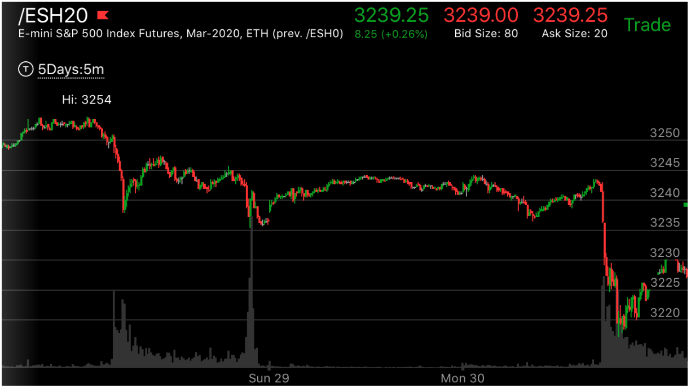
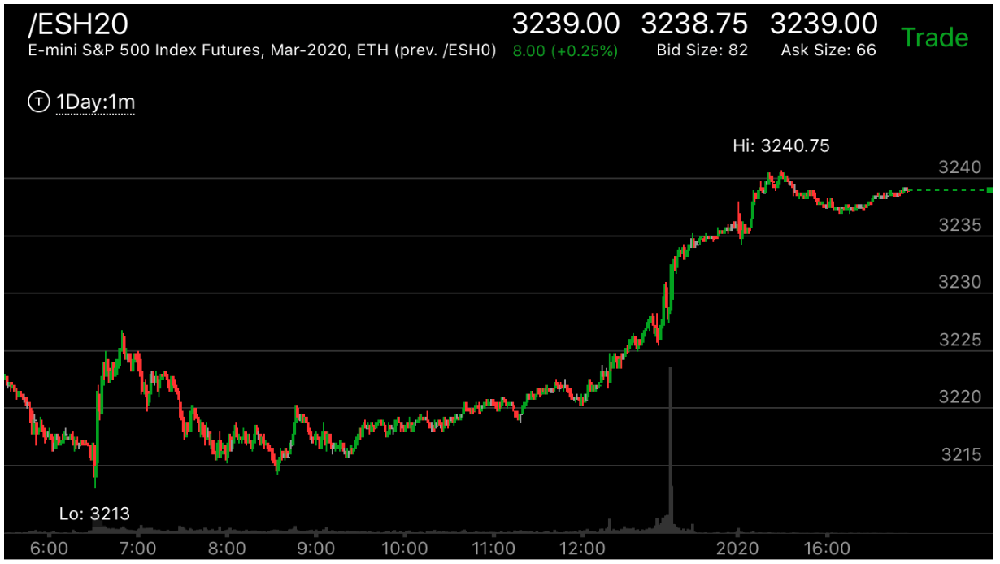
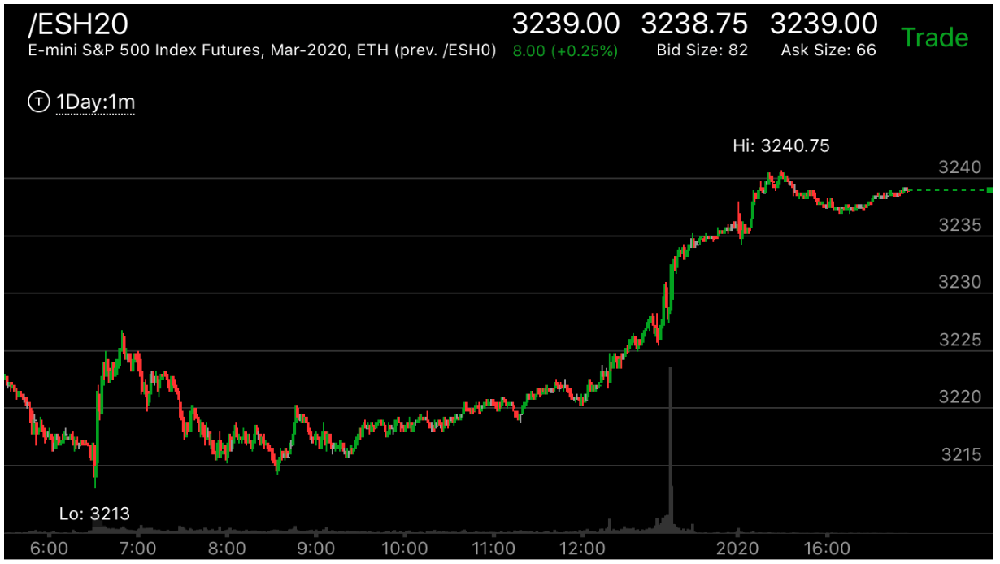
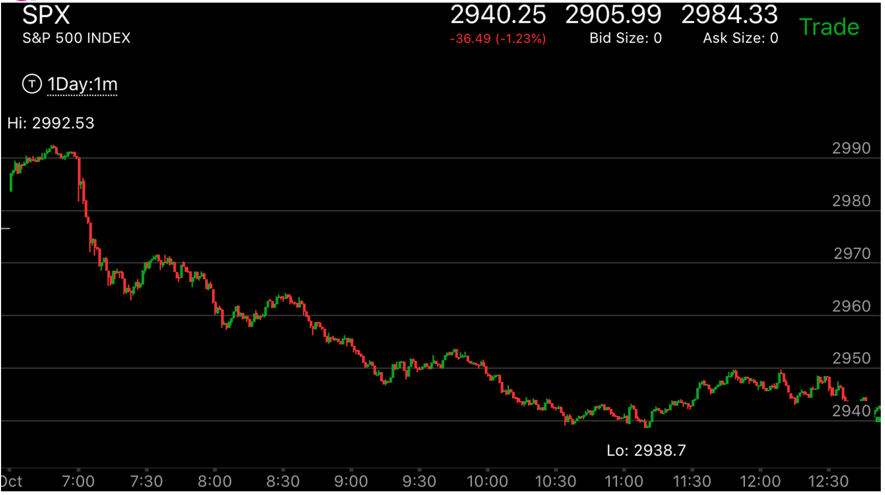

第二浪出现了相对弱势反转
- 这个走势，如果单独看第二浪，会认为它会继续运动。但是如果和第一浪比较，那么它就显得弱了。
这样形成了相对弱势
- 目前看第二浪有两种，走平后，下跌/上涨，或者稍微反弹，就继续小幅运动。这两个都不是典型的反转走势。
但是和第一浪结合，就形成了相对弱势。

 

图示:图一当中，在Sun29前面，它出现了第一浪下跌，立刻拉回。到了Mon30，
它一开盘就出现了大跌。它下跌后，走平，然后继续下跌，然后反弹。如果就这个走势本身，它是第一浪很大，
走平后，第二浪很小，而且还反弹，说明是个下跌的相对弱势。但是它作为第二浪，想到第一浪更弱。所以从这个
角度看，它是反转了。图二中，它在Tue31创新低，立刻拉回，似乎也不符合上涨相对弱势的情况，因为它创新低，
和Mon30的新低相对，它的上涨更强。但是大盘已经在更大的走势下反转了。所以这个其实是上涨走势。
它本身又冲高后，立刻拉回，形成了相对弱势。然后大幅上涨。图三是一分钟的反转走势，它从最低点立刻大幅上涨，
似乎不符合在反转点缓慢的走势。但是它因为前面已经反转了，所以这里只是一个选择问题。它第一浪大，
第二浪小，大幅回调后，继续上涨。



图示：图一中大跌，第一浪幅度很大，大约20个点。反弹后，不断的缓慢下跌。
图二中持续下跌，10：00出现了一个反弹，相对弱势，这个弱势是对开盘后，的走势说的，但是无法反转第一浪。
图三，开盘后，暴跌。第一浪跌了30个点，然后，缓慢创新低。如果光看这个走势，它应该会持续下跌。但是如果和图一的第一
浪比较，它是更弱的第二浪。它下跌的幅度更大，而反弹很小，就继续下跌了。而第二浪则不是这样。